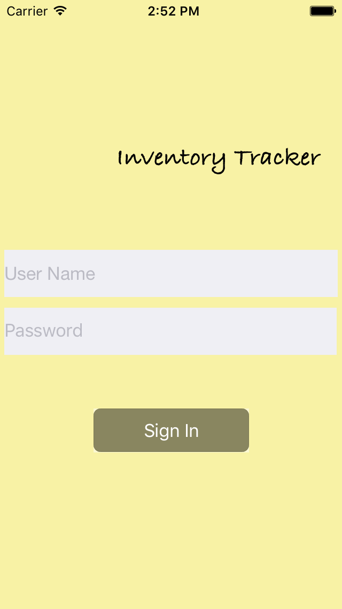

| The sample app uses pre-release/beta release version of Couchbase Lite software |
Introduction
Couchbase Lite 2.8 release supports out-of-the-box support for secure Peer-to-Peer Sync, over websockets, between Couchbase Lite enabled clients in IP-based networks without the need for a centralized control point.
This tutorial will demonstrate how to -
-
Use NetService for peer discovery (i.e.to advertise and discover services/devices )
-
Configure a websockets listener to listen to incoming requests. We will walk through various TLS modes and client authentication modes.
-
Start a bi-directional replication from active peer.
-
Sync data between connected peers
Throughout this tutorial, the terms "passive peer" and "server" will be used interchangeably to refer to the peer on which the websockets listener is started. The "active peer" and "client" will be used interchageably to refer to the peer on which the replicator is initialized.
We will be using a simple inventory app in swift as an example to demonstrate the peer-to-peer functionality.
You can learn more about Couchbase Lite here
Prerequisites
This tutorial assumes familiarity with building swift apps with Xcode and with Couchbase Lite.
-
If you are unfamiliar with the basics of Couchbase Lite, it is recommended that you follow the Getting Started guides
-
iOS (Xcode 11.4+)
-
Download latest version from the Mac App Store
-
-
Wi-Fi network that the peers can communicate over
-
You could run your peers in multiple simulators. But if you were running the app on real devices, then you will need to ensure that the devices are on the same WiFi network
-
App Overview
This is a simple inventory app that can be used as a passive or active peer.
The app uses a local database that is pre-populated with data. There is no Sync Gateway or Couchbase Server installed.
When used as a passive peer :-
-
Users log in and start websockets listener for the couchbase lite database. A service corresponding to the listener is advertised over Bonjour.
-
View the status of connected clients
-
Directly sync data with connected clients
When used as a active peer :-
-
Users can log in and start browsing for devices
-
Connect to a listener
-
Directly sync data with connected clients

App Installation
-
Clone the repo
git clone https://github.com/rajagp/couchbase-lite-peer-to-peer-sync-websocket-samples -
The app project does not come bundled with the Couchbase Lite framework. Run the script to pull down the framework
cd /path/to/cloned/repo/couchbase-lite-peer-to-peer-sync-websocket-samples/ios/list-sync sh install_11.sh
Try it Out
-
Open the iOS project using Xcode
open list-sync.xcodeproj -
Build and run the project
-
Verify that you see the login screen

Exploring the App Project
-
The xcode project comes pre-bundled with some resource files that we will examine here
-
samplelist.json: JSON data that is loaded into the local Couchbase Lite database. It includes the data for a single document. See Data Model -
userallowlist.json: List of valid client users (and passwords) in the system. This list is looked up when the server tries to authenticate credentials associated with incoming connection request. -
listener-cert-pkey.p12: This is PKCS12 file archive that includes a public key cert corresponding to the listener and associated private key. The cert is a sample cert that was generated using OpenSSL tool. -
listener-pinned-cert.cer: This is the public key listener cert (the same cert that is embedded in thelistener-cert-pkey.p12file) in DER encoded format. This cert is pinned on the client replicator and is used for validating server cert during connection setup
Data Model
Couchbase Lite is a JSON Document Store. A Document is a logical collection of named fields and values.The values are any valid JSON types. In addition to the standard JSON types, Couchbase Lite supports some special types like Date and Blob.
While it is not required or enforced, it is a recommended practice to include a "type" property that can serve as a namespace for related.
The "List" Document
The app deals with a single Document with a "type" property of "list". This document is loaded from the samplelist.json file bundled with the project
An example of a document would be
{
"type":"list",
"list":[
{
"image":{"length":16608,"digest":"sha1-LEFKeUfywGIjASSBa0l/cg5rlm8=","content_type":"image/jpeg","@type":"blob"},
"value":10,
"key":"Apples"
},
{
"image":{"length":16608,"digest":"sha1-LEFKeUsswGIjASssSBa0l/cg5rlm8=","content_type":"image/jpeg","@type":"blob"},
"value":110,
"key":"oranges"
}
]
}The document is encoded as a ListRecord struct defined in the ListRecord.swift file
Initializing Local Database
The app loads the data from the JSON document named samplelist.json the first time the database is created. This is done regardless of whether the app is ;launched in passive or active mode.
-
Open the DatabaseManager.swift file and locate the
openOrCreateDatabaseForUser()method. This method creates an instance of Couchbase Lite database for the user if one does not exist and loads the empty database with data ready from bundled sample JSON file
var exists = false
if Database.exists(withName: kUserDBName, inDirectory: userFolderPath) == true {
_userDb = try? Database(name: kUserDBName, config: options)
exists = true
}
else {
_userDb = try? Database(name: kUserDBName, config: options)
}-
Open the SampleFileLoaderUtils.swift file and locate the
loadSampleJSONDataForUserFromFile()method. This function parses the document in JSON and udpates it to embed the "image" property into every object in the "list" array. The "image" property holds a blob entry to an image asset. The image for the blob is available in the "Assets.xcassets" folder -
Open the DatabaseManager.swift file and locate the
createUserDocumentWithData()method. This is where the document is saved into the database. Again, this is only done if there is no preexisting database for the user
for (key,value) in data {
let docId = "\(kDocPrefix)\(key)"
print("DocId is \(docId)")
let doc = MutableDocument(id:docId, data:value as! Dictionary<String, Any>)
try db.saveDocument(doc)
}Passive Peer or Server
First, we will walk through the steps of using the app in passive peer mode
Initializing Websockets Listener
-
Open the DatabaseManager.swift file and locate the
initWebsocketsListenerForUserDb()function. This is where the websockets listsner for peer-to-peer sync is initialized
// Include websockets listener initializer code
let listenerConfig = URLEndpointListenerConfiguration(database: db) (1)
// Configure the appropriate auth test mode
switch listenerTLSSupportMode { (2)
case .TLSDisabled:
listenerConfig.disableTLS = true
listenerConfig.tlsIdentity = nil
case .TLSWithAnonymousAuth:
listenerConfig.disableTLS = false // Use with anonymous self signed cert
listenerConfig.tlsIdentity = nil
case .TLSWithBundledCert:
if let tlsIdentity = self.importTLSIdentityFromPKCS12DataWithCertLabel(kListenerCertLabel) {
listenerConfig.disableTLS = false
listenerConfig.tlsIdentity = tlsIdentity
}
else {
print("Could not create identity from provided cert")
throw ListDocError.WebsocketsListenerNotInitialized
}
case .TLSWithGeneratedSelfSignedCert:
if let tlsIdentity = self.createIdentityWithCertLabel(kListenerCertLabel) {
listenerConfig.disableTLS = false
listenerConfig.tlsIdentity = tlsIdentity
}
else {
print("Could not create identity from generated self signed cert")
throw ListDocError.WebsocketsListenerNotInitialized
}
}
listenerConfig.enableDeltaSync = true (3)
listenerConfig.authenticator = ListenerPasswordAuthenticator.init { (4)
(username, password) -> Bool in
if (self._allowlistedUsers.contains(["password" : password, "name":username])) {
return true
}
return false
}
_websocketListener = URLEndpointListener(config: listenerConfig)| 1 | Initialize the URLEndpointListenerConfiguration for the specified database. There is a listener for a given database. You can specify a port to be associated with the listener. In our app, we let Couchbase Lite choose the port |
| 2 | This is where we configure the TLS mode. In the app, we have a flag named listenerTLSSupportMode that allows the app to switch between the various modes. You can change the mode by changing the value of the variable. See Testing Different TLS Modes |
| 3 | Enable delta sync. It is disabled by default |
| 4 | Configure the password authenticator callback function that authenticates the username/password received from the client during replication setup. The list of valid users are configured in userallowlist.json file bundled with the app |
Testing Different TLS Modes
The app can be configured to test different TLS modes as follows by setting the listenerTLSSupportMode property in the DatabaseManager.swift file
fileprivate let listenerCertValidationMode:ListenerCertValidationTestMode = .TLSEnableValidationWithCertPinning| listenerTLSSupportMode Value | Behavior |
|---|---|
TLSDisabled |
There is no TLS. ALl communication is plaintext (insecure mode) |
TLSWithAnonymousAuth |
The app uses Couchbase Lite APIs to auto-generate an anonymous server cert and to use that as |
TLSWithBundledCert |
The app generates |
Start Websockets Listener
-
Open the DatabaseManager.swift file and locate the
startWebsocketsListenerForUserDb()method.
DispatchQueue.global().sync {
do {
try websocketListener.start()
handler(websocketListener.urls,nil)
}
catch {
handler(nil,error)
}
}Advertising Listener Service
In the app, we use NetService to advertise the websockets listener service listening at the specified listener port. This aspect of the app has nothing to do with Couchbase Lite. In your production app, you can use any suitable mechanism including using a well known URL to advertise your service that active clients can be preconfigured to connect to.
-
Open the ServiceAdvertiser.swift file and look for
ServiceAdvertiserclass. Here, we advertise a Bonjour service with service type of `_cblistservicesync._tcp`
/// The Bonjour service name. Setting it to an empty String will be
/// mapped to the device's name.
public var serviceName: String = ""
/// The Bonjour service type.
public var serviceType = "_cblistservicesync._tcp"
/// The Bonjour domain type.
public var serviceDomain = ""-
The service is published as implemented in the
doStart()method.
private func doStart(database:String, _ port:UInt16) {
let service = NetService(domain: serviceDomain, type: serviceType,
name: serviceName, port:Int32(port))
service.delegate = self
service.includesPeerToPeer = true
service.publish()
services[database] = service
}Explore the content in the ServiceAdvertiser.swift. It includes implementation of the NetServiceDelegate delegate callback methods to accept incoming connections.
Stop Websockets Listener
-
Open the DatabaseManager.swift file and locate the
stopWebsocketsListenerForUserDb()method. You can stop the listener at any point. If there are connected clients, it will warn you that there are active connections. If you choose to stop listener, all connected clients will be disonnected
func stopWebsocketsListenerForUserDb() throws{
print(#function)
guard let websocketListener = _websocketListener else {
throw ListDocError.WebsocketsListenerNotInitialized
}
websocketListener.stop()
_websocketListener = nil
}Try it out
-
Run the app on a simulator or a real device. If its the latter, make sure you sign your app with the appropriate developer certificate
-
On login screen, sign in as any one of the users configured in the
userallowlist.jsonfile such as "bob" and "password" -
From the "listener" tab, start the listener by clicking on "Start Listener" button
-
Click on the "action" button to see number of connected clients. It should be 0 if there are no connected clients
-
From the "listener" tab, stop the listener by clicking on "Stop Listener" button
Active Peer or Client
We will walk through the steps of using the app in active peer mode
Discovering Listeners
In the app, we use NetService to browse for devices that are advertising services with name `_cblistservicesync._tcp`. This aspect of the app has nothing to do with Couchbase Lite. In your production app, you could launch your listener at well known URL well and preconfigure your active peer to connect to the URL.
-
Open the ServiceBrowser.swift file and look for
ServiceBrowserclass. Here, we browse for a service with service type of `_cblistservicesync._tcp` using Bonjour
public func startSearch(withDelegate delegate:ServiceBrowserDelegate? ){
peerBrowserDelegate = delegate
self.browser = NetServiceBrowser()
self.browser?.delegate = self
self.browser?.searchForServices(ofType: serviceType, inDomain: domain)
}Explore the content in the ServiceBrowser.swift. It includes implementation of the NetServiceDelegate delegate callback methods to resolve the service to its IP Address and port that will be used by the client to connnect to the listener.
Initializing and Starting Replication
Initialilzing a replicator for peer-to-peer sync is fundamentally not different than if your Couchbase Lite client were to syncing with a remote Sync Gateway.
-
Open the DatabaseManager.swift file and locate the
startP2PReplicationWithUserDatabaseToRemotePeer()method. If you have been using Couchbase Lite to sync data with Sync Gateway, this code should seem very familiar. In this function, we initialize a bi-directional replication to the listener peer in continuous mode. We also register a Replication Listener to be notified of status to the replication status.
if replicatorForUserDb == nil {
// Start replicator to connect to the URLListenerEndpoint
guard let targetUrl = URL(string: "wss://\(peer)/\(kUserDBName)") else {
throw ListDocError.URLInvalid
}
let config = ReplicatorConfiguration.init(database: userDb, target: URLEndpoint.init(url:targetUrl)) (1)
config.replicatorType = .pushAndPull
config.continuous = true
// Explicitly allows self signed certificates. By default, only
// CA signed cert is allowed
switch listenerCertValidationMode { (2)
case .TLSSkipValidation :
// Use acceptOnlySelfSignedServerCertificate set to true to only accept self signed certs.
// There is no cert validation
config.acceptOnlySelfSignedServerCertificate = true
case .TLSEnableValidationWithCertPinning:
// Use acceptOnlySelfSignedServerCertificate set to false to only accept CA signed certs
// Self signed certs will fail validation
config.acceptOnlySelfSignedServerCertificate = false
// Enable cert pinning to only allow certs that match pinned cert
if let pinnedCert = self.loadSelfSignedCertForListenerFromBundle() {
config.pinnedServerCertificate = pinnedCert
}
else {
print("Failed to load server cert to pin. Will proceed without pinning")
}
case .TLSEnableValidation:
// Use acceptOnlySelfSignedServerCertificate set to false to only accept CA signed certs
// Self signed certs will fail validation. There is no cert pinning
config.acceptOnlySelfSignedServerCertificate = false
}
let authenticator = BasicAuthenticator(username: user, password: password)(3)
config.authenticator = authenticator
replicatorForUserDb = Replicator.init(config: config) (4)
_replicatorsToPeers[peer] = replicatorForUserDb
}
if let pushPullReplListenerForUserDb = registerForEventsForReplicator(replicatorForUserDb,handler:handler) {
_replicatorListenersToPeers[peer] = pushPullReplListenerForUserDb
}
replicatorForUserDb?.start() (5)
handler(PeerConnectionStatus.Connecting)| 1 | Initialize a Repicator Configuration for the specified local database and remote listener URL endpoint |
| 2 | This is where we configure the TLS server cert validation mode - whether we enable cert validation or skip validation. This would only apply if you had enabled TLS support on listener as discussed in [TLS Modes on Listener]. If you skip server cert validation, you still get encrypted communication, but you are communicating with a untrusted listener. In the app, we have a flag named listenerCertValidationMode that allows you to try the various modes. You can change the mode by changing the value of the variable. See Testing Different Server Validation Modes |
| 3 | The app uses basic client authentication to authenticate with the server |
| 4 | Initialize the Replicator |
| 5 | Start replication. The app uses the events on the Replicator Listener to listen to monitor the replication. |
Testing Different Server Validation Modes
The app can be configured to test different TLS modes as follows by setting the listenerCertValidationMode property in the DatabaseManager.swift file
fileprivate let listenerCertValidationMode:ListenerCertValidationTestMode = .TLSEnableValidationWithCertPinning| listenerCertValidationMode Value | Behavior |
|---|---|
TLSSkipValidation |
There is no validation of server cert. This is typically in used in dev/test environments with self signed certs. Skipping server cert authentication is discouraged in production environments. Communication is encrypted |
TLSEnableValidation |
If the listener cert is a well known CA then you use this mode. Of course, in our sample app, the listener cert as specified in |
TLSEnableValidationWithCertPinning |
In this mode, the app uses the pinned cert, |
Stopping Replication
-
Open the DatabaseManager.swift file and locate the
stopP2PReplicationWithUserDatabaseToRemotePeer()method. If you have been using Couchbase Lite to sync data with Sync Gateway, this code should seem very familiar. In this function, we remove any listeners attached to the replicator and stop it. You can restart the replicator again instartP2PReplicationWithUserDatabaseToRemotePeer()method
if let listener = _replicatorListenersToPeers[peer] {
replicator.removeChangeListener(withToken: listener)
_replicatorListenersToPeers.removeValue(forKey: peer)
}
replicator.stop()Try it out
-
Follow instructions in "Try It Out" section of Passive Peer or Server to start app in passive mode on a simulator instance or real device.
-
Run the app on a separate simulator instance or a real device. If its the latter, make sure you sign your app with the appropriate developer certificate
-
On login screen, sign in as any one of the users configured in the
userallowlist.jsonfile such as "bob" and "password". An an exercise, try with an invalid user and ensure it fails -
Tap on the "browser" tab. The app automatically browses for listener and lists it here.
-
Tap on the row corresponding to listener. This will start replication with the listener and it shoud transition to Connected state
-
Verify the connection count on listener
-
Swipe left on the the row. You should see option to remove listener and Disconect. Try Disconnect and then reconnect again

Syncing Data
Once the connection is established between the peers, you can start syncing. Couchbase Lite takes care of it.
Try it out
-
Run the app on two or more simulators or real devices. If its the latter, make sure you sign your app with the appropriate developer certificate
-
Start the listener on one of the app instances. You could also have multiple listeners.
-
Connect the other instances of the app to the listener
-
Tap on the "List" tab
-
Edit the quanity or image on any one of the instances
-
Watch it sync automatically to other connected clients
What Next
As an exercise, switch between the various TLS modes and server cert validation modes and see how the app behaves. You can also try with different topologies to connect the peers.
Learn More
Congratulations on completing this tutorial!
This tutorial walked you through an example of how to directly synchronize data between Couchbase Lite clients. While the tutorial is for iOS, the concepts apply equally to other Couchbase Lite platforms.
Further Reading
TBD